Veteran Exemption Entry
Purpose
This SOP outlines the standardized process for receiving, reviewing, validating, and completing Veteran’s Exemption requests to ensure accuracy, compliance with statutory requirements, and timely customer service.
Scope
This procedure applies to all staff involved in Veteran’s Exemption entry, including:
Customer Service Counter staff receiving submissions
Customer Service staff reviewing Veteran’s Exemption claims
Customer Service staff translogging completed entry
This SOP covers Veteran Exemptions entry, corrections, and removal.
Definitions
CAMA – Computer Assisted Mass Appraisal
NMDVS – New Mexico Department of Veteran Services
Veteran’s Exemption Overview
Veterans Exemption
Benefit: Reduces the taxable value of your property by $10,000. This credit can also be used on other properties, including commercial, and the DMV.
Eligibility: Honorably discharged veteran or unmarried surviving spouse who served at least 90 consecutive days (other than training). Applies to real property or manufactured homes. Can be combined with the disabled veteran percentage 90% and lower exemption (this excludes VTW -100%). The back of the certificate will show if part or all this exemption has been used before. In cases when a remaining amount is available.
Application Process: Obtain a Certificate of Eligibility from the New Mexico Department of Veterans Services (NMDVS) by submitting their Veteran Application form. Bring the original certificate to the Assessor's Office for endorsement. Once applied, it carries over year to year without reapplication. If the Veteran moves, they must present certificate for endorsement for the new residence.
Required Documents: DD-214 (discharge papers), Driver’s License/State Issued ID, and NMDVS certificate.
Deadlines: Within 30 days of Notice of Value for current year application; apply anytime for future years.
How to Apply: Start with NMDVS (call 505-346-3986 or visit dmv.nm.gov). Then submit it to Assessor.
Disabled Veterans Exemption
Benefit:
For 100% disabled veterans, it's a full (100%) waiver of property taxes on the primary residence. This is in addition to the $10,000 standard veterans’ exemption.
The percentage-based exemption exempts a percentage of the Veteran’s primary residence taxable value equal to the Veteran’s service-connected disability rating (e.g., 50% disability = 50% exemption).
Eligibility: Veteran with a federally recognized service-connected disability (rated by U.S. Department of Veterans Affairs). Applies to primary residence, including jointly owned with spouse. Unmarried surviving spouses may qualify if the veteran died from service-connected causes.
Application Process: Apply for a Disabled Certificate of Eligibility from NMDVS, then submit to Assessor.
Required Documents: VA disability rating letter, NMDVS certificate, proof of residency.
Deadlines: Same as veterans’ exemption.
How to Apply: Via NMDVS first, then Assessor.
Related Documents
Bernco.gov Forms - Assessor
New Mexico Veterans Services DVS_DVS1_VeteransExemption_Fillable_rev03-Mar_2025.pdf ; State Veteran Benefits | NM Department of Veterans Services
Statutes
Property Tax Exemption for Veterans with a Disability - NMOneSource.com
Certificate and Address Verification
Check certificate type:
Green certificate = $10,000
Verify the certificate details:
Verify Veteran name with ID and UPC.
Applicant name line could either be the Veteran or Qualifying Widow.
Verify Physical address matches UPC.
Confirm veteran signed the bottom left corner and it has the NMDVS Endorsement.
Check for any prior endorsements on the back of the certificate. (MVD usage, other counties)
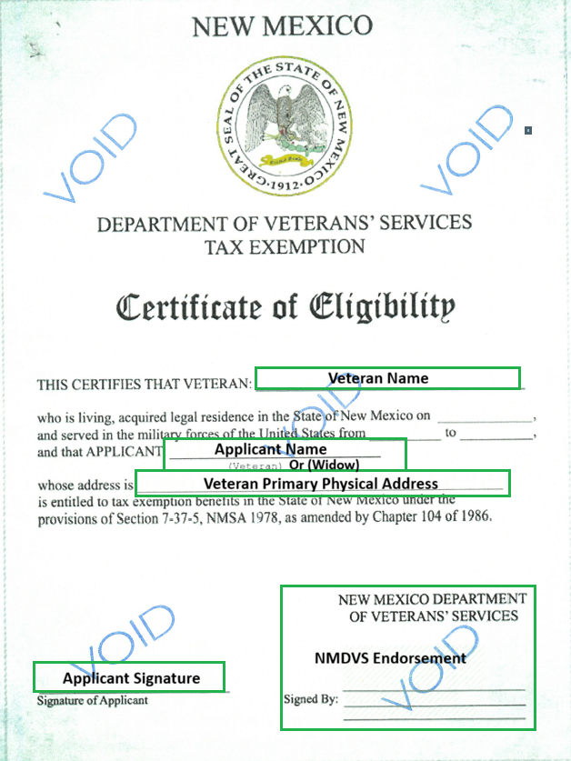
Pink Certificate = Disability Rating %
Verify the certificate details:
Verify the name of the Veteran.
Check the percentage rating, it will be used during exemption entry.
Ensure the address matches the address for the UPC.
Applicant name line could either be the Veteran or Qualifying Widow.
Verify Applicant signature.
NMDVS endorsement
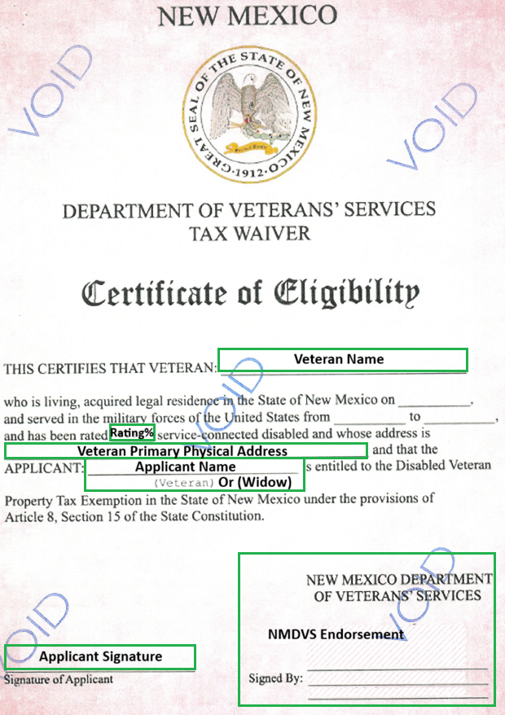
Tan Certificate=100%
Verify the certificate details:
Verify the name of the Veteran.
Check the percentage rating, it will be used during exemption entry.
Ensure the address matches the address for the UPC.
Applicant name line could either be the Veteran or Qualifying Widow.
Verify Applicant signature.
NMDVS endorsement
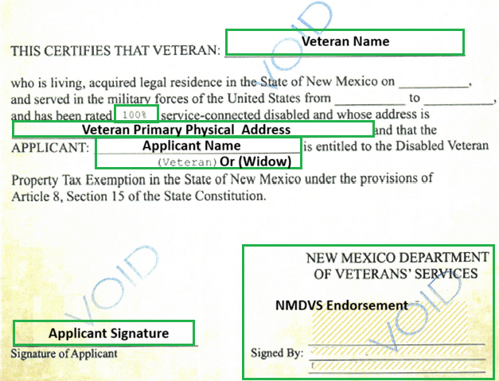
Endorse the Certificate
On the certificate back,
Verify Prior Use: If prior UPC is written, check that the exemption has been removed.
Write:
Date
Amount being endorsed (usually full $10,000)
UPC number
Assessor's name and your initials (e.g., "D Lara/AB" or "Damian Lara/AB")
"Bern" or "Bernalillo County"
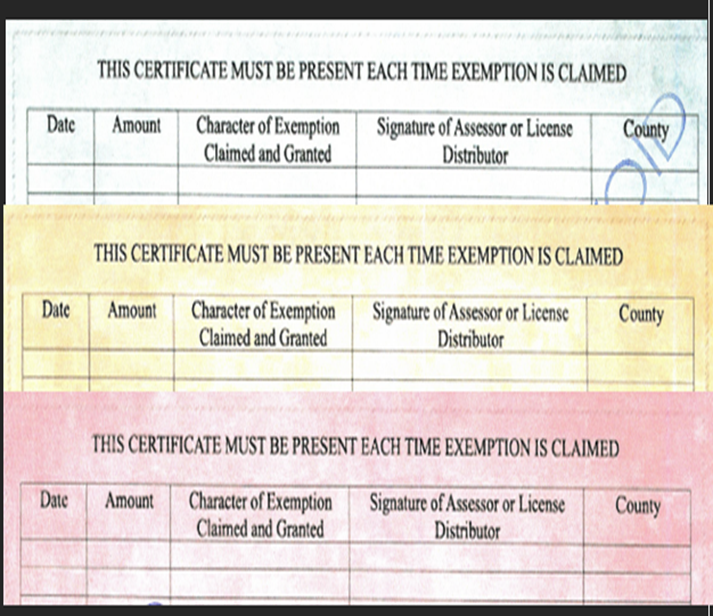
Disabled Veteran Exemption Certification of Ownership and Residence Form
(This is only used for Percentage Certificates)
First Print the form.
1st Section (Green Box):
County Name, County Assessor’s phone number, Tax year to apply Exemption.
Veteran/Widow First Name, Middle Initial, Last Name,
Primary address for which the Exemption will be applied,
City & State, Zip Code, Phone Number,
Veteran Certificate #
UPC#
Primary Address for the UPC.
Part II (Blue Box)
Applicant Signature and Date.
Part IV (Green Box)
Place Applicants ID when making a copy.
Date Stamp the form.
Make a copy of the form with the I.D.
Keep the copy with the I.D. on it to scan into the record and give the other back to the Applicant with their I.D.
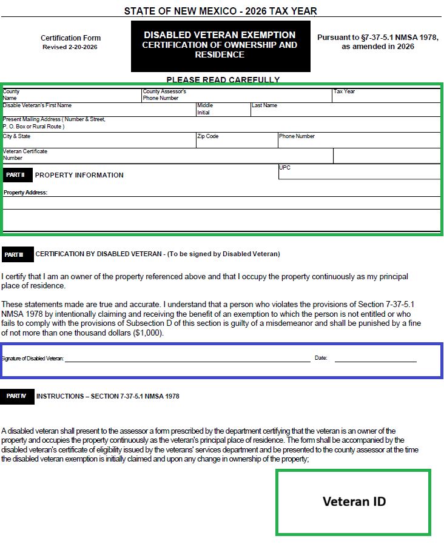
Exemption Form
First Print the form.
1st Green Box:
Enter UPC#.
Enter LUC
Enter Acreage
Enter PID
Enter Telephone Number
Enter Name of Owner on Record
Enter Person who received document over the counter
Enter Date
2nd Green Box
Enter Veteran Certificate number
Select the type of certificate that is being submitted. (For the amount write in the amount on the green certificate being used.)
If the Exemption was previously used enter the UPC# it was used on and whether it was removed.
Blue Box
Obtain the appropriate signature.
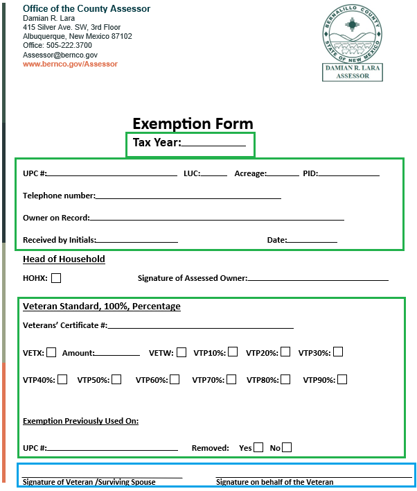
Exemption Input
Prior Use Research
Research the owner to ensure that any prior use of the certificate can be ended.
On the dashboard select the 3 lines (menu) in the top left corner.
Select the arrow next to property records.
Select Owner name.
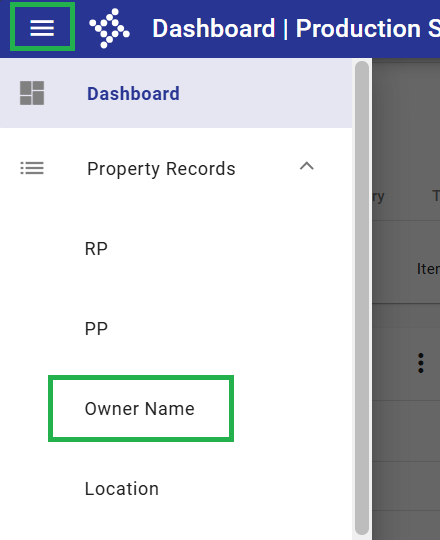
Enter the owner’s name Last name, first name also include an *.
Ensure that multiple entries do not include the exemption certificate does not exist on a separate record.
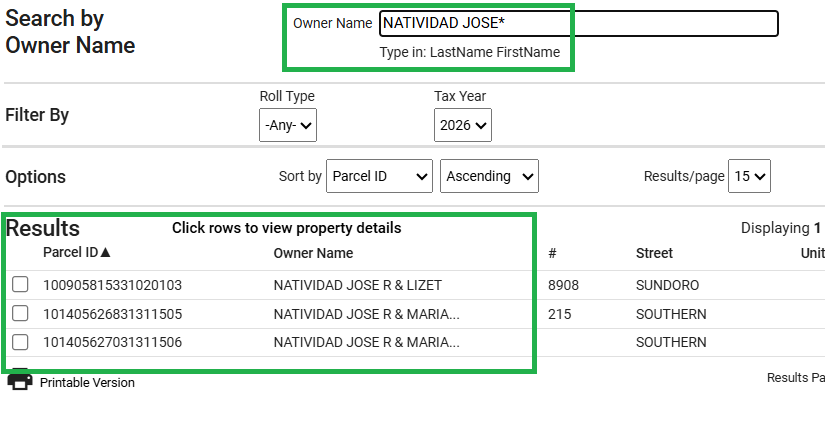
Deactivation of old certificates.
Should be handled by an Assessor Tech Lead, Admin Support Assistant, or Manager.
General Exemption Screen
General Exemption Entry
In the transaction menu select “General Exemption by Parcel” under “Exemptions”
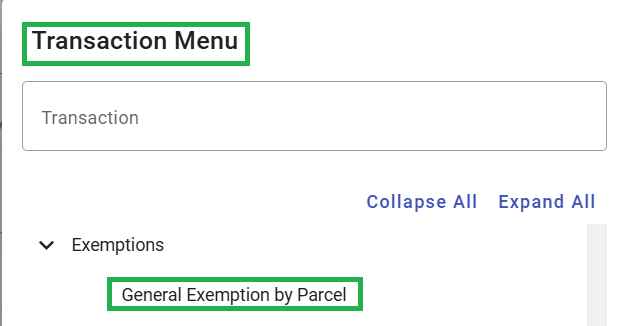
The new window that opens will be the “General Exemption by Parcel” entry screen.
Enter the property UPC the exemption is being applied to.
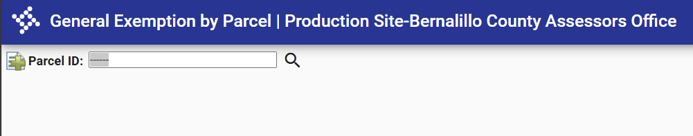
Veteran Exemptions Entry
Parcel Screen:
LUC (Land Use Code) needs to be a residential code.
1100
1102
1103
1104
1250
11PT
11GC
11HT
1150
Veteran exemptions only apply to the first 5 acres. If over 5 acres and they have 100% disabled vet cert HOHX and or Standard Veteran Certification will need to be added.
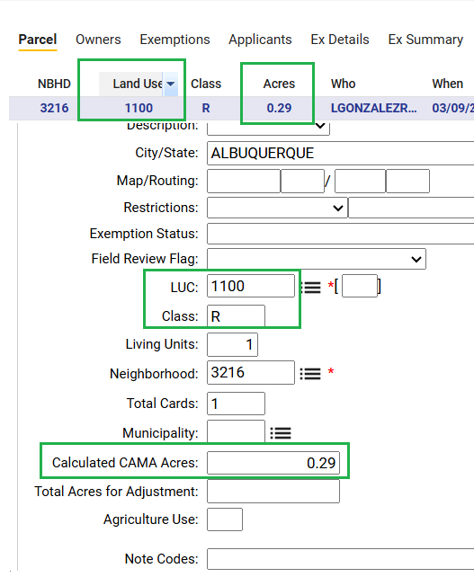
Owners Screen:
Select “Owners” Tab
Ensure the Telephone number is updated to match the number provided on the “Disabled Veteran Exemption Certification of Ownership and Residence” Form.
Special assessments should be noted.
Value Freeze needs special handling if a Veteran is applying for 100%. See a Lead or manager for assistance.
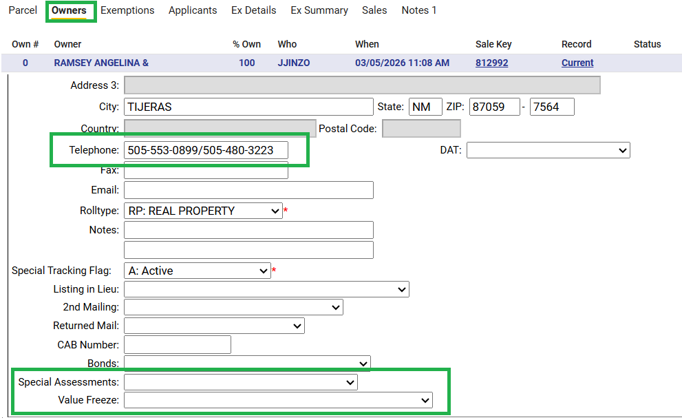
Exemptions Screen:
Select the “Exemptions” Tab
Click add record at the top left.
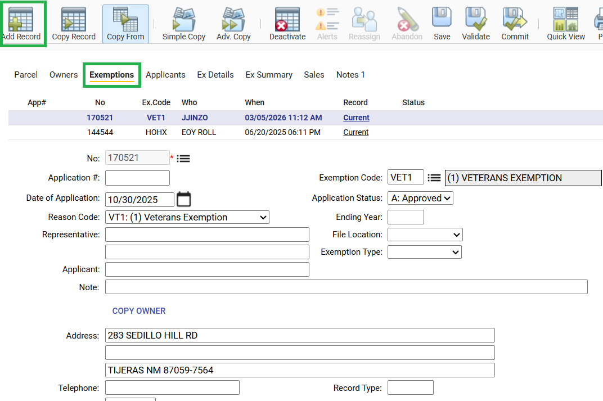
Click the menu button next to the “Exemption Code” Box.
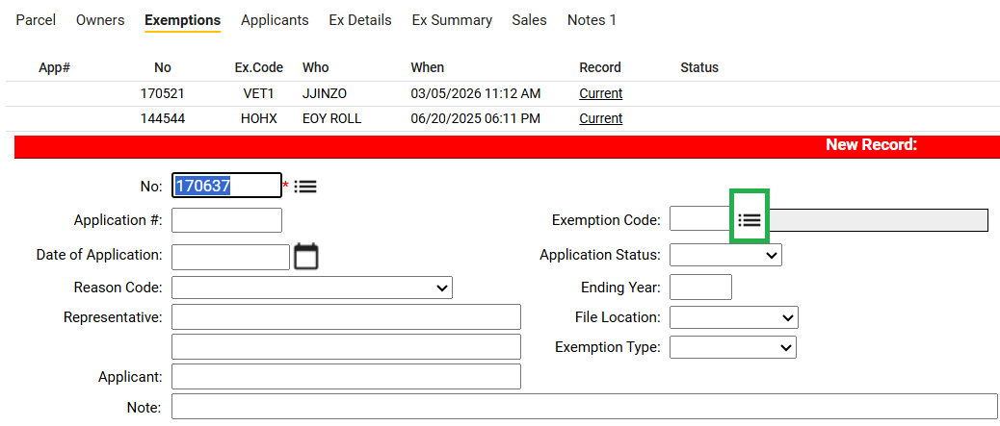
Green Certificate:
Type “Vet1” in the text field.
If 2 Green veteran certificates are received select “Vet2”.
Click “Find” on the top right.
Click “Ok”.
Tan and Pink Certificates:
Type “VetW” in the text field for 100%
For the Pink Disability Percentage Cert You will type “VET” and the corresponding percentage number.
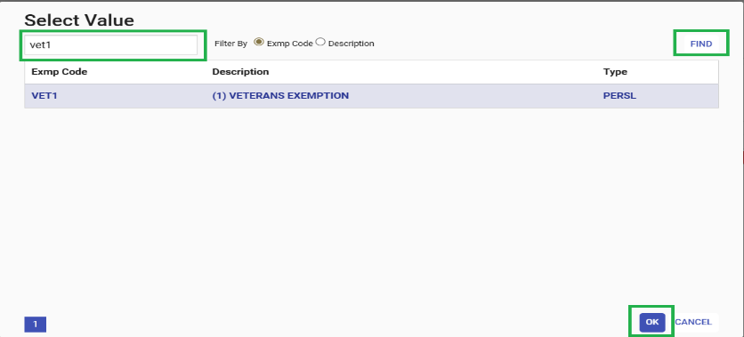
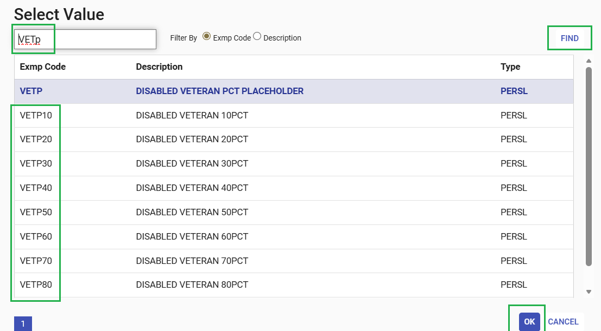
Enter the date in the “Date of Application” box.
Select “A:Approved” in the “Application Status” drop down.
In “Reason Code” Select
VT1: (1) Veterans Exemption
VT2: (2) Veterans Exemption
VTP: Disabled Vet Percent
VTW: Disabled Vet Waiver
Enter the Applicant name as it appears on the Certificate in the “Applicant” text field.
Click “Copy Owner” and select the this will auto populate the “Address” section.
Make sure the
Enter the phone number.
“Telephone” text box.
DO NOT fill out the “Veteran Exemption” section.
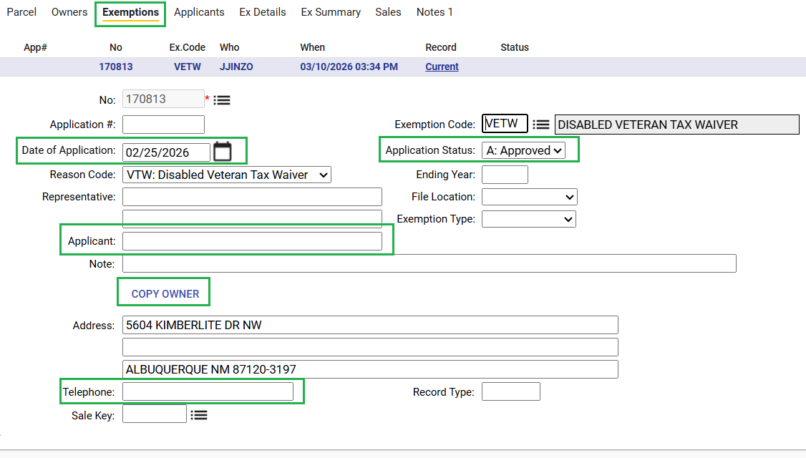
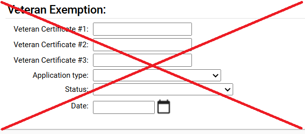
Once you are finished with the input on the exemption screen click “Validate” before moving to the next screen.
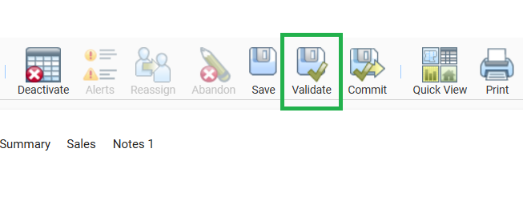
Applicants Screen:
Click “Applicants” screen.
Click “Add Record”
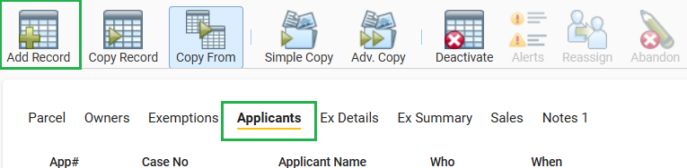
Click the menu next to the “Owner Reference” text box.
Select the owner information and click “OK”.
Select “COPY OWNER” Ensure that the name matches the name on the Vet Cert.
Select the owner information and click “OK”.
Enter the phone number.
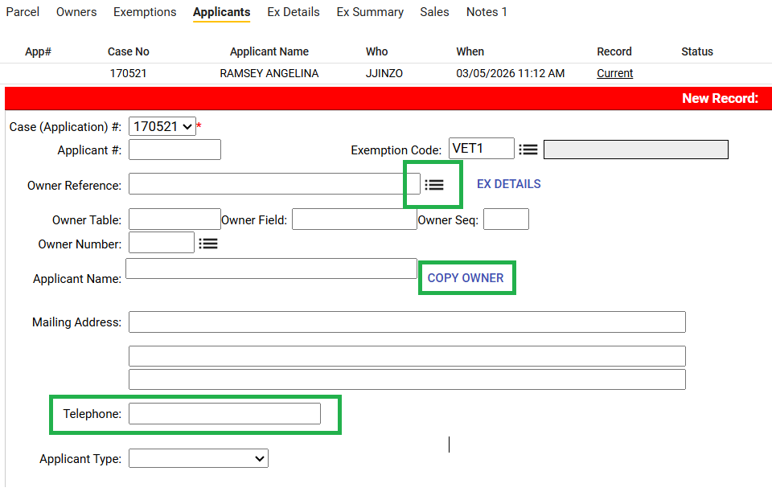
Scroll down to the “User Fields:”
Enter the Veteran Certificate # into the “Veterans Certificate #” text field.
In the “Application Status:”:
F: First Time Applied
L: Lost Certificate Re-issued
P: Previously Used
Enter the Date.
Enter Initials of the person who received the application.
Amount applied:
Green Certificate:
Enter $10,000. If two certs enter $20,000.
Tan or Pink Certificate:
Enter the applicable percentage.
Blue box items:
(This section is for previously used certificates)
See Note template for required Note.
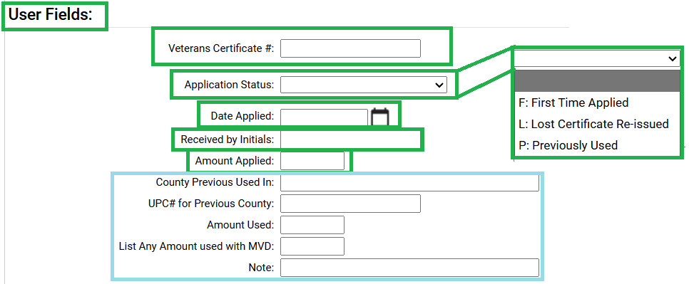
Once you are finished with the input on the exemption screen click “Validate” before moving to the next screen.
EX Details Screen:
Select the “EX Details” screen.
Click “Add Record”
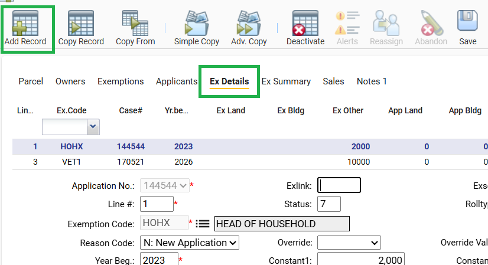
The “Exemption Code” boxes will reflect the current exemption you are entering.
In the “Reason Code” box select “A: Additional” if there are existing exemptions.
Select “N: New Application” if there are no other exemptions
Select “ADD: ADD” in the “Override” box.
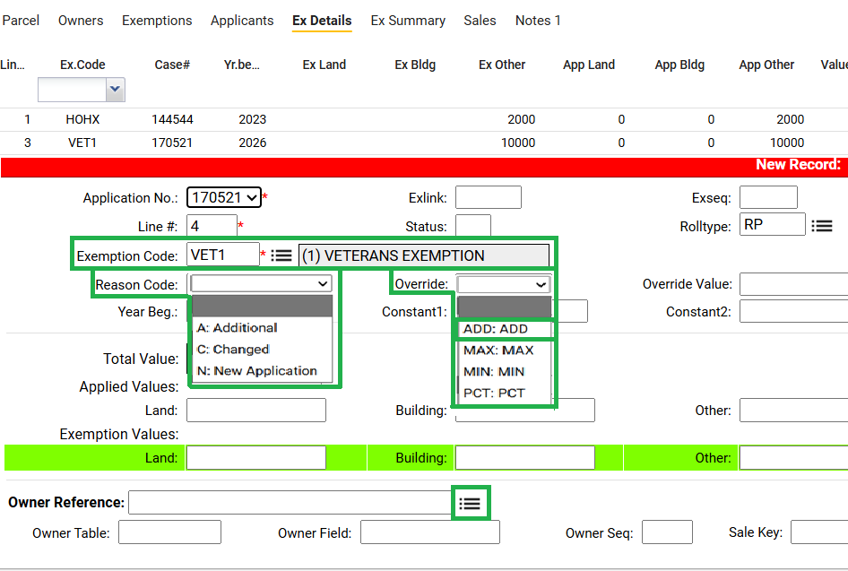
Select the Menu next to the “Owner Reference” text box.
Select the Owner’s name and click “OK”
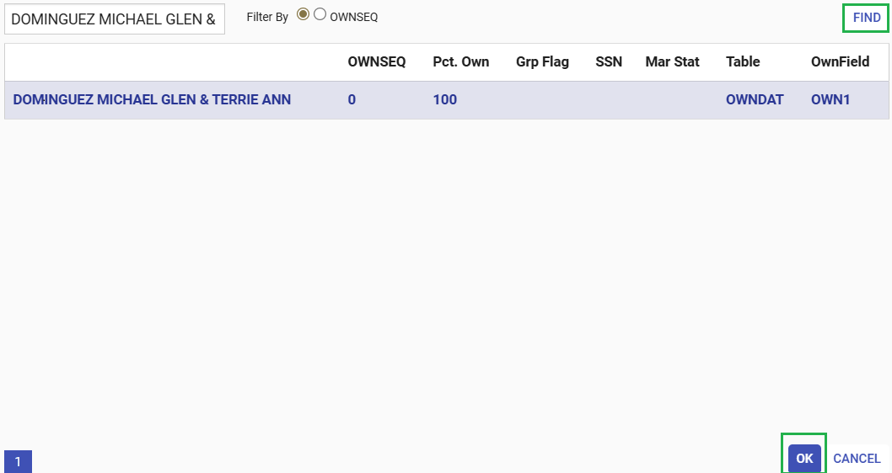
Once you are finished with the input on the “EX Details” screen click “Validate” before moving to the next screen.
Ex Summary Screen:
Select Ex Summary
This screen will confirm that the exemption has been applied completely.
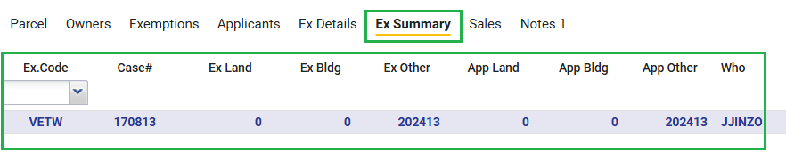
Notes 1 Screen:
Select the “Notes 1” screen.
Select “ADD”
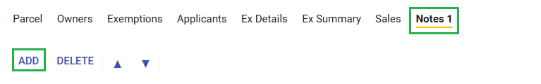
The # should be the next in sequence for new notes
Notes that need to go into a second line need to be .01, .02, .03, etc..
<w:p w14:paraId="49EE0241" w14:textId="6AFB1A3B" w:rsidR="00AF261F" w:rsidRPr="00A61842" w:rsidRDefault="006F26EF"><w:pPr><w:rPr><w:sz w:val="20"/><w:szCs w:val="20"/></w:rPr></w:pPr><w:r w:rsidRPr="00A61842"><w:rPr><w:sz w:val="20"/><w:szCs w:val="20"/></w:rPr><w:t>16
<w:p w14:paraId="49EE0241" w14:textId="6AFB1A3B" w:rsidR="00AF261F" w:rsidRPr="00A61842" w:rsidRDefault="006F26EF"><w:pPr><w:rPr><w:sz w:val="20"/><w:szCs w:val="20"/></w:rPr></w:pPr><w:r w:rsidRPr="00A61842"><w:rPr><w:sz w:val="20"/><w:szCs w:val="20"/></w:rPr><w:t>16
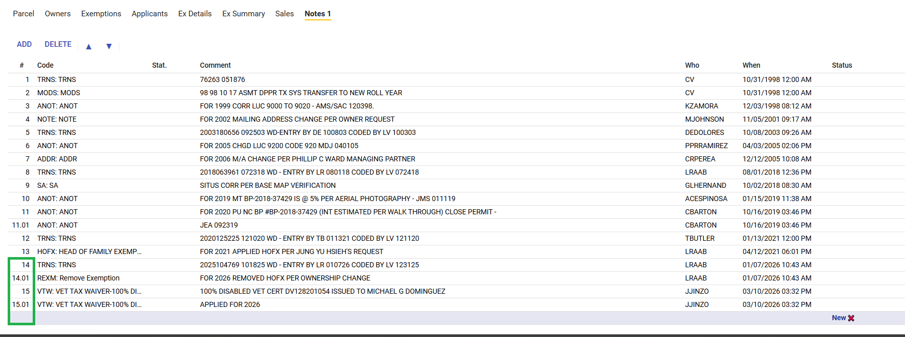
In the code column select the comment code based on the exemption add.
VTW for 100%
VTP for Percentage
VETX for Standard Vet Exemption.
*See below table for Vet Codes
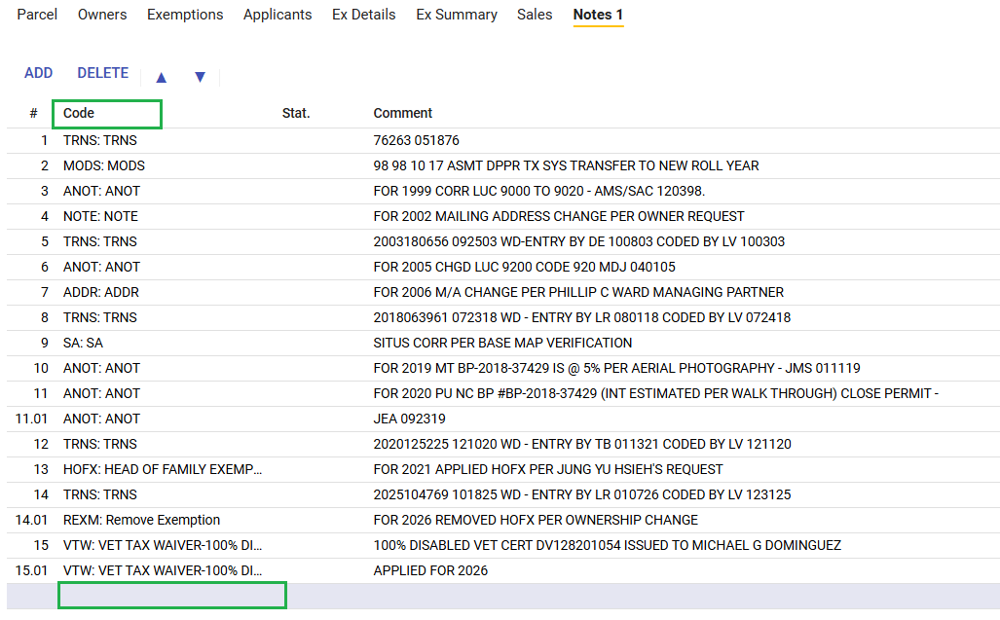
Follow the structure below for comments.
After you commit your entry IASWorld will automatically enter your initials, date, and time.
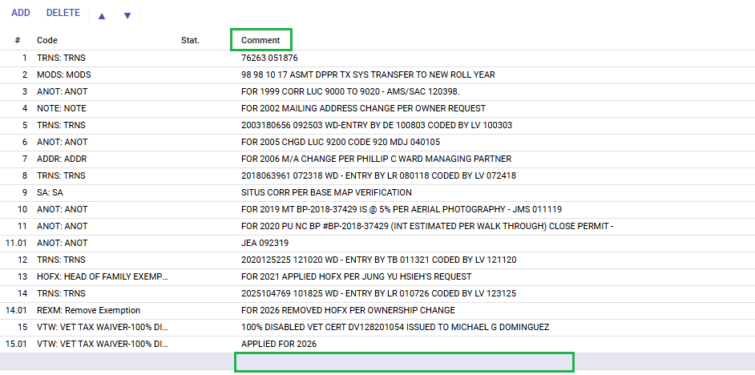
Confirm and Commit:
Once you have reviewed the entry and confirmed it is correct select Commit
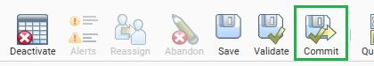
CODE
APPLYING VET CERTS
CODE
COMMMENT
000000 VET CERT ISSUED TO NAME REC'D ON 0000000 HIGHER PERCENTAGE ENTERED
VETX
000000 VET CERT ISSUED TO NAME APPLIED FOR 20**
VETX
000000 WIDOW VET CERT ISSUED TO NAME APPLIED FOR 20**
VP**
**% DISABLED WIDOW VET CERT ISSUED TO NAME APPLIED FOR 20**
VP10
10% DISABLED VET CERT 0000-0000-0000 ISSUED TO NAME APPLIED FOR 20**
VP20
20% DISABLED VET CERT 0000-0000-0000 ISSUED TO NAME APPLIED FOR 20**
VP30
30% DISABLED VET CERT 0000-0000-0000 ISSUED TO NAME APPLIED FOR 20**
VP40
40% DISABLED VET CERT 0000-0000-0000 ISSUED TO NAME APPLIED FOR 20**
VP50
50% DISABLED VET CERT 0000-0000-0000 ISSUED TO NAME APPLIED FOR 20**
VP60
60% DISABLED VET CERT 0000-0000-0000 ISSUED TO NAME APPLIED FOR 20**
VP70
70% DISABLED VET CERT 0000-0000-0000 ISSUED TO NAME APPLIED FOR 20**
VP80
80% DISABLED VET CERT 0000-0000-0000 ISSUED TO NAME APPLIED FOR 20**
VP90
90% DISABLED VET CERT 0000-0000-0000 ISSUED TO NAME APPLIED FOR 20**
VTW (FULL)
100% DISABLED VET CERT 0000-0000-0000 ISSUED TO NAME APPLIED FOR 20**
VTW
**% DISABLED WIDOW VET CERT 0000-0000-0000 ISSUED TO NAME APPLIED FOR 20**
CODE
REMOVAL OF VET CERTS COMMENT
CODE
COMMENT
REXM
FOR 20** REMOVED HOHX & VETX #0000 PER 100% DISABLED
REXM
FOR 20** REMOVED VETX #0000 AMT OF $0000 TO APPLY FULL AMT $10,000
REXM
FOR 20** REMOVED VETX #0000 AMT OF $0000 TO ADJUST AMT TO $0000 PER REASON
REXM
FOR 20** REMOVED VETW #0000 PER VETERAN NAME - VETERAN IS NO LONGER ELIGIBLE DUE TO CHANGE IN THE DISABILITY RATING FROM **% TO **%
REXM
FOR 20** REMOVED VETX #0000 PER OWNERSHIP CHANGE
REXM
FOR 20** N/C PER DEATH AFDVT FOR NAME DOD 000000
REXM
FOR 20** N/C PER DEATH CERT FOR NAME DOD 000000
REXM
FOR 20** N/C PER OBITUARY FOR NAME DOD 000000
REXM
FOR 20** REMOVED VETX #0000 PER DEATH & WIDOW CERTS
REXM
FOR 20** REMOVED VETX #0000 PER NEW VET CERTFICATE ISSUED BY NMDVS
REXM
FOR 20** REMOVED VETP00 PER NEW VET CERT ISSUED BY NMDVS RATING CHG TO 00%
REXM
FOR 20** REMOVED HOHX & VETX #0000 PER REASON
REXM
FOR 20** REMOVED VETX #0000 PER OWNER/VETERAN REQUEST - WANTS TO CLAIM ON UPC #0000000000000000
REXM
FOR 20** REMOVED VETX #0000 PER VETERAN CLEAN UP - VETERAN CERT BELONGS TO PREVIOUS OWNER NAME
REXM
FOR 20** REMOVED VETX #0000 PER VETERAN CLEAN UP - VETERAN CERT IS NOT VALID WITH THE NMDVS
CODE
DENIAL OF VET CERTS COMMENT
CODE
COMMMENT
NOTE
FOR 20** VETW 100% DISABLED VET CERT #0000 CAN NOT BE APPLIED DUE TO PROPERTY BEING CLASSIFIED AS VACANT (LUC 9200)
NOTE
FOR 20** VETW #0000 DENIED DUE TO VETERAN NAME NOT OWNER OF PROPERTY
CODE
LETTERS FOR VET CERTS COMMENT
CODE
COMMENT
LTR
FOR 20** LTR MAILED TO OWNER 100% EXEMPT FROM PROPERTY TAXES - INITIALS DATE
65AM
FOR 20** VAL FRZ APP MAILED TO PROPERTY OWNER - INITIALS DATE
65AM
FOR 20**VAL FRZ SPANISH APP MAILED TO PROPERTY OWNER - INITIALS DATE
65AM
FOR 20**VAL FRZ APP EMAILED TO SAMPLE@HOTMAIL.COM - INITIALS DATE
65AM
FOR 20** VAL FRZ APP MAILED TO PROPERTY OWNER (NO LTR SENT) - INITIALS DATE
NOTE
FOR 20** VET APP MAILED TO PROPERTY OWNER - INITIALS DATE
NOTE
FOR 20** VET APP MAILED TO PROPERTY OWNER (NO LTR SENT)- INITIALS DATE
NOTE
FOR 20** WIDOW VET APP MAILED TO PROPERTY OWNER (NO LTR SENT)- INITIALS DATE
CODE
APPLICANTS TAB - USER-FIELD NOTE (SAMPLES)COMMENT
COMMMENT
LAST USED AT MVD ON DATE
NOT CLAIMING IN PREVIOUS CO
OLD CERT #0000 RMVD/PROP SOLD
OUTREACH 00/00/00
PREVIOUS SOLD / RMVD FOR 20**
PREVIOUS UPC NOT VALID NOT CLAIMING
REISSUED CERT W/ SAME # ONLY ENDORSED
REPLACES OLD CERT #0000
SAME CERT ENDORSED WITH SAME UPC
SAME CERT ENDORSED W/ NEW AMT $10,000
SATELLITE COORS
SATELLITE SAN MATEO
VERIFIED RMVD FROM PREV COUNTY
Veteran Exemption Entry
Green = $10,000
Pink = % off
Tan = full waiver
Verify the certificate
- Veteran name matches the ID
- Address matches the UPC
- Applicant signed in the bottom-left
- NMDVS endorsement (bottom-right)
- Flip it over — any prior endorsements? (MVD, other counties)
Endorse the back
- Today's date
- Amount being endorsed (usually $10,000)
- The property UPC number
- "D Lara / your initials"
- "Bern" or "Bernalillo County"
IASWorld — order of tabs
Exemption codes (Exemptions tab)
| Cert | Type | Reason Code |
|---|---|---|
| Green ×1 | VET1 | VT1 |
| Green ×2 | VET2 | VT2 |
| Pink % | VETP10–VETP90 | VTP |
| Tan 100% | VETW | VTW |
Note codes (Notes 1 tab)
| Cert | Code | Format |
|---|---|---|
| Green | VETX | 000000 VET CERT ISSUED TO NAME APPLIED FOR 20** |
| Pink (e.g. 50%) | VP50 | 50% DISABLED VET CERT 0000-0000-0000 ISSUED… |
| Tan 100% | VTW | 100% DISABLED VET CERT 0000-0000-0000 ISSUED… |
| Removal | REXM | FOR 20** REMOVED VETX #0000 PER… |
Valid LUCs
1100 · 1102 · 1103 · 11041250 · 11PT · 11GC11HT · 1150
Applicant status (User Fields)
- F
- First Time Applied
- L
- Lost Certificate Re-issued
- P
- Previously Used
EX Details
- Reason Code = A
- Additional (existing exemptions)
- Reason Code = N
- New Application (no others)
- Override
ADD: ADD